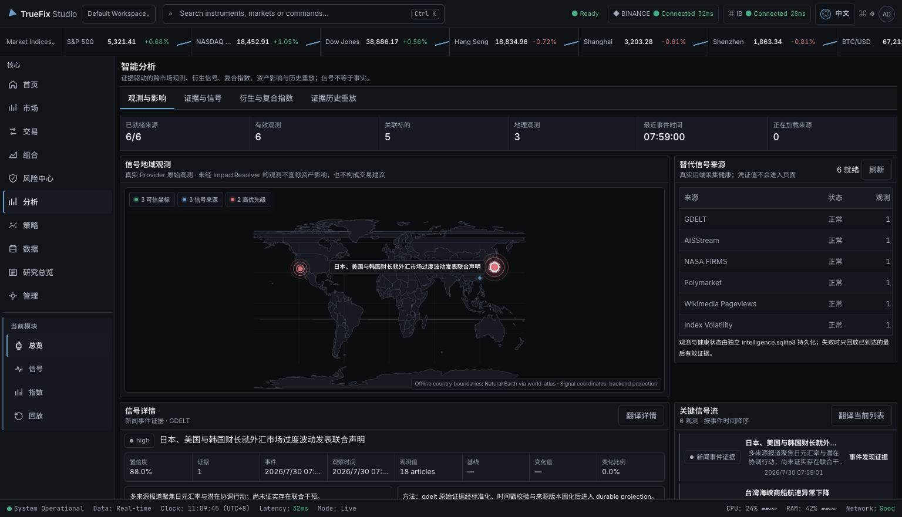
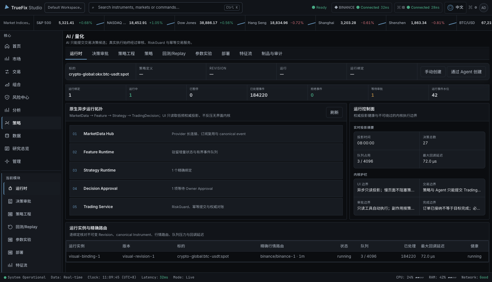

See your market information together
Compare prices, news, signals, and account information, and open the original source when you need to check it.
Desktop research and trading assistant · Pre-release
TrueFix Studio is a desktop app for people who already use brokers, exchanges, or market-data services. It brings market research, an AI assistant, strategy testing, and reviewed trading actions into one place.
WHAT IT HELPS YOU DO
Use TrueFix alongside your current broker or exchange. Your accounts and money stay where they are while you research, test ideas, and review possible actions in one desktop app.
Compare prices, news, signals, and account information, and open the original source when you need to check it.
Use the AI assistant to organize information, or test a rule-based strategy with past or simulated data before using a real account.
See the selected service, account, test or live mode, product, fees, and risk before a trading action is sent.
TrueFix never asks you to deposit money.You choose which outside services to connect and what they may do. Your broker or exchange still controls the account and its permissions.
NIGHTLY RELEASE · 0.1.0
Public pre-release installers built from the current TrueFix Studio nightly channel. Choose the package that matches your operating system and architecture.
Apple Silicon · arm64
DMG installer for Apple Silicon Macs. This nightly build is currently unsigned.
Download DMGWindows · x64
Standard setup executable for 64-bit Windows. MSI is also available for managed installation.
Download setup EXELinux · x86_64
Portable AppImage for 64-bit Linux. A Debian package is available for apt-based systems.
Download AppImageIf macOS blocks this unsigned build, move the app to Applications, then run:
xattr -cr "/Applications/TrueFix Studio.app"
Use this command only for the app downloaded from the official TrueFix Release.
HOW IT WORKS
You can use TrueFix only for research, test an idea without real money, or continue to a trading action after checking the account and risk.
WHAT IT IS
Connect selected brokers, exchanges, and market-data services. TrueFix shows their information together without moving your money.
WHO IT IS FOR
For traders, strategy developers, and research or risk teams who use more than one market service. It does not recommend what you should buy or promise returns.
WHAT THEY DO
Check where information came from, test an idea, choose an account, review fees and risk, then decide whether to send the action.
EXAMPLE USERS
These are examples of how the product can be used, not customer testimonials. Available features depend on the service and account you connect.
Independent multi-market trader · Singapore
Maya compares crypto and U.S. stock information, opens the source behind a signal, and checks the account and risk before deciding what to do.
Quant developer · Tokyo
Ren tests a strategy with fixed historical data, checks the result, and tries it with simulated money before considering a live account.
Research and risk lead · Seoul
Ji-woo uses the AI assistant to organize market information without giving it trading permission. A person reviews the account, fees, and risk before any action.
SUPPORTED SERVICES
You choose which service and account to connect. What you can view or do depends on the features and permissions that service provides.
 Interactive Brokers
Interactive BrokersThese logos show services TrueFix is designed to connect with. They do not mean the companies sponsor or officially partner with TrueFix. Features vary by service and account.
02 / PRODUCT
Use three main areas to follow markets, check the source of information, test ideas, and review account actions.


03 / PRODUCT FILM
A short look at market research, the AI assistant, strategy testing, safety checks, and the future Market Twin idea.
04 / SAFETY
TrueFix does not accept deposits or open a financial account for you. You choose every connected service, account, permission, and test or live mode.
A connection can only use the market data or trading permissions allowed by the broker, exchange, or data service you selected.
Service → Account → PermissionBefore sending, confirm the account, product, direction, amount, price, fees, and risk. If the result is unclear, TrueFix checks the existing order instead of sending it again.
Check → Risk check → SendThe AI assistant can use only the tools you allow. Giving it access to research does not give it permission to trade, and a suggestion is never an approved order.
Analyze → Suggest → You review05 / HOW IT CONNECTS
TrueFix keeps its main profile on your device. It connects only to the broker, exchange, market-data, or AI services that you set up.
Read the architecture guide↗TrueFix shows which service supplied market data, news, signals, and account actions, so you can check the source.
06 / WAYS TO USE IT
Start by viewing data or doing research. Add simulated trading, background strategy runs, or real trading only when you need them.
See market data, positions, risk, and order context in one workspace.
Run and test rule-based strategies without keeping the desktop window open, while using the same account and risk limits.
Ask the AI assistant to organize and explain market information using only the data and tools you allow.
07 / ABOUT US
TrueFix Studio is an independent, pre-release desktop app for people who already use brokers, exchanges, market data, or rule-based trading strategies.
We are building it to reduce switching between tools, make information sources easy to check, and keep AI and automation under the user's control.
LOCAL-FIRST
TrueFix does not require a TrueFix cloud account. Connections to outside services are configured by you for the features you choose to use.
NO CUSTODY
TrueFix is software, not a broker, exchange, bank, or investment adviser. It does not accept deposits, hold money, or promise returns.
USER CONTROL
Use research only, stay read-only, test in simulation, or configure an authorized execution path. AI assistance does not remove your responsibility to review.
START WITH THE GUIDE
The guide explains installation, connecting a service, using the AI assistant, trying simulation, and what to check before using a real account.